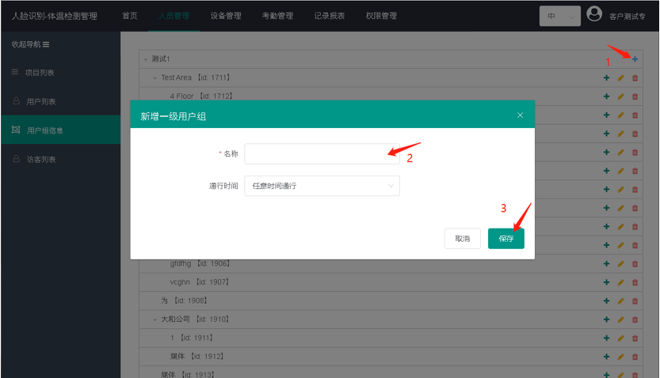
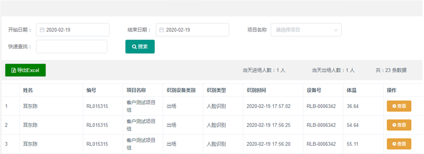

设备联网后，长按鼠标左键，密码123456，进入后台设置，将公共设置如下：
首先创建设备组，根据实际情况创建不同的设备组，比如东门设备组，西门设备组，一个设备组可包含多个设备。
点击【设备管理】点击左侧列表【设备组】点击【新增】，填入相关信息后点击【保存】
创建设备组后，可以开始添加设备。点击左侧的【设备列表】点击【新增】填写相关信息。
设备号可在设备设置里查看.（设备号必须与设备一致否则云平台与设备无法互通）
在【人员管理】页面下，选择左侧的【用户组信息】，点击【项目名称右边的加号】，输入自定义名称后点击【保存】

在【人员管理】页面下，点击左侧的【用户列表】，点击【新增】，填入相关信息，录入照片后点击【保存】即可。
下发用户到设备上（下发的人员必须有照片才可下发成功）
(1) 下发到指定设备：在设备管理界面中，点击【设备列表】—【已下发用户列表】—【下发】，勾选要添加的用户，点击【实时下发】。
下发到设备组： 在设备管理界面中，点击【设备组】，勾选要下发的设备组，点击【批量添加下发用户】，勾选要下发的用户，点击【添加】。
点击【访客列表】点击【新增】，填写相关信息。
照片比对：若只验证人脸与照片一致，则需上传照片。若电脑连接有摄像头，可通过摄像头进行拍照，若无摄像头可选择自行上传图片。
人证比对：若需验证身份证与人脸一致，则此处不必上传照片，需填写身份证字段。设备会验证身份证号码及身份证图像与真人是否一致。
登记完成后，点击【立即下发】，选择下发设备，点击【照片下发】或【人证下发】。
二维码表可查询所有生成二维码的记录，包括生成二维码的业主、访客名称、访问设备、访问时间、访问事由。
识别记录可查看所有下发人员通行记录，包括姓名、编号、项目名称、识别设备类别、识别类型、识别时间、设备号、查看详情。
查看详情可看到授权照片及通行时抓拍的照片。
访客记录可看到访客通行时的记录，包括来访人姓名、识别时间、识别设备类别、识别类型、设备、地址、详情。
陌生记录可查看所有陌生人识别记录，包括识别的编号、识别类型、识别时间、识别图片。
访客人证记录可看到访客通行时的设备码、设备地址、身份证号码、用户名称、记录时间、创建时间、详情。
点击【考勤管理】后选择右方的【考勤组管理】，点击【新增】根据需要填写名称，选择项目及需要统计的用户组。
默认有周一到周五早就九晚六为考勤时间，可点击【修改】或【新增】设置需要的考勤时间，考勤时间可以设置多个，一天允许设置三个考勤时间。
【休息时间】点击打开休息时间后，在设置的时间段内即为休息时间不会统计工时跟考勤，例如十二点到两点为休息时间，即可对应设置开始时间为【12:00】结束时间为【14:00】
【打卡时间限制】可设置当天什么时间开始记录上班或是下班的打卡记录。
【法定节假日自动排休】打开此功能后会根据中国的节假日进行自动排休不记录考勤，如端午节，中秋节等节日。
【特殊时间】可根据情况设置额外需要上班的时间或是放假的时间，例如补班或是调休等。
可查询每个人的详细考勤记录，可根据考勤组，用户组，姓名等进行筛选查询，点击【详情】后可可查看人员的本月考勤记录。
如有迟到或缺卡的人员需要补卡，可找到当日考勤时间点击【缺卡】后，对当天的考勤状态进行调整。
如需为其他管理人员分配管理账号，可在【权限管理】中新增管理员，注意需先创建项目，将管理员分配至该项目当中。
1.打开智能测温一体机管理平台，点击【报表管理】，点击【识别记录】可查看所有下发人员体温记录，包括姓名、编号、项目名称、识别设备类别、识别类型、识别时间、设备号、查看详情。

2.打开智能测温一体机管理平台，点击【报表管理】，点击【陌生记录】可查看所有陌生人体温记录，包括识别的编号、识别类型、识别时间、识别图片。